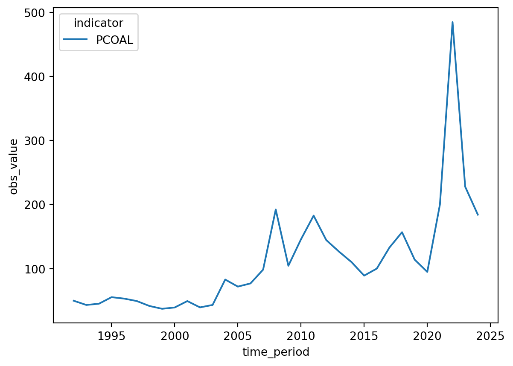

import imfpimfp
imfp


imfp, created and maintained by Promptly Technologies, is a Python package for downloading data from the International Monetary Fund’s RESTful JSON API.
NOTE: The IMF recently discontinued their SDMX 2.0 API, which imfp used, and migrated to 3.0. Version 1.3.0 of imfp represents my best effort to make a semi-backward compatible version of the library. Function names remain the same, and I have added a few helpers to map old parameters to the new ones. But the honest truth is that the structure of the API and the data returned by it has changed very significantly, and your old code is very unlikely to work without some modifications. I apologize for the inconvenience. imfp version 2.0.0 will be released soon, and will rewrite the library more comprehensively to follow the patterns of the new API.
Installation
To install the stable version of imfp from PyPi, use pip.
pip install --upgrade imfpTo load the library, use import:
Workflow
The imfp package introduces four core functions: imf_databases, imf_parameters, imf_parameter_defs, and imf_dataset. The function for downloading datasets is imf_dataset, but you will need the other functions to determine what arguments to supply to your imf_dataset function call.
Fetching a List of Databases with imf_databases
For instance, all calls to imf_dataset require a database_id. This is because the IMF serves many different databases through its API, and the API needs to know which of these many databases you’re requesting data from.
To fetch a list of available databases, use:
# Fetch list of available databases
databases = imfp.imf_databases()See Working with Databases for more information.
Fetching a List of Parameters and Input Codes with imf_parameters
Requests to fetch data from IMF databases are complicated by the fact that each database uses a different set of parameters when making a request. (At last count, there were 43 unique parameters used in making API requests from the various databases!) You also have to have the list of valid input codes for each parameter. See Working with Parameters for a more detailed explanation of parameters and input codes and how they work.
To obtain the full list of parameters and valid input codes for a given database, use:
# Fetch list of valid parameters and input codes for commodity price database
params = imfp.imf_parameters("PCPS")The imf_parameters function returns a dictionary of data frames. Each dictionary key name corresponds to a parameter used in making requests from the database:
# Get key names from the params object
params.keys()dict_keys(['country', 'indicator', 'data_transformation', 'frequency'])Each named list item is a data frame containing the valid input codes (and their descriptions) that can be used with the named parameter.
To access the data frame containing valid values for each parameter, subset the params dict by the parameter name:
# View the data frame of valid input codes for the frequency parameter
params['frequency']| input_code | description | |
|---|---|---|
| 0 | A | Annual |
| 1 | D | Daily |
| 2 | M | Monthly |
| 3 | Q | Quarterly |
| 4 | S | Half-yearly, semester |
| 5 | W | Weekly |
Supplying Parameter Arguments to imf_dataset
To make a request to fetch data from the IMF API, just call imfp.imf_dataset with the database ID and keyword arguments for each parameter, where the keyword argument name is the parameter name and the value is the list of codes you want.
For instance, on exploring the frequency parameter of the Primary Commodity Price System database above, we found that the frequency can take one of three values: “A” for annual, “Q” for quarterly, and “M” for monthly. Thus, to request annual data, we can call imfp.imf_dataset with frequency = ["A"].
Similarly, we might search the dataframes of valid input codes for the indicator and data_transformation parameters to find the input codes for coal and index:
# Find the 'indicator' input code for coal
params['indicator'].loc[
params['indicator']['description'].str.contains("Coal")
]| input_code | description | |
|---|---|---|
| 14 | PCOAL | Coal index, Commodity price index, Index, 2016... |
| 15 | PCOALAU | Coal, Australia, US dollars per metric tonne, ... |
| 16 | PCOALSA | Coal, South Africa, US dollars per metric tonn... |
# Find the 'data_transformation' input code for index
params['data_transformation'].loc[
params['data_transformation']['description'].str.contains("Index")
]| input_code | description | |
|---|---|---|
| 0 | INDEX | Index |
| 1 | INDEX_PCH | Index, percent change |
| 2 | INDEX_PCHY | Index, percent change from a year ago |
Finally, we can use the information we’ve gathered to make the request to fetch the data:
# Request data from the API
df = imfp.imf_dataset(database_id = "PCPS",
frequency = ["A"], indicator = ["PCOAL"],
data_transformation = ["INDEX"])
# Display the first few entries in the retrieved data frame
df.head()| country | indicator | data_transformation | frequency | time_period | obs_value | |
|---|---|---|---|---|---|---|
| 0 | G001 | PCOAL | INDEX | A | 1992 | 49.892138 |
| 1 | G001 | PCOAL | INDEX | A | 1993 | 43.279151 |
| 2 | G001 | PCOAL | INDEX | A | 1994 | 45.213931 |
| 3 | G001 | PCOAL | INDEX | A | 1995 | 55.433711 |
| 4 | G001 | PCOAL | INDEX | A | 1996 | 53.179458 |
Working with the Returned Data Frame
Note that all columns in the returned data frame are string objects, and to plot the series we will need to convert to valid numeric or date formats:
# Convert obs_value to numeric and time_period to integer year
df = df.astype({"time_period" : int, "obs_value" : float})Then, using seaborn with hue, we can plot different indicators in different colors:
import seaborn as sns
# Plot prices of different commodities in different colors with seaborn
sns.lineplot(data=df, x='time_period', y='obs_value', hue='indicator');/home/runner/work/imfp/imfp/.venv/lib/python3.14/site-packages/seaborn/relational.py:300: FutureWarning: ChainedAssignmentError: behaviour will change in pandas 3.0!
You are setting values through chained assignment. Currently this works in certain cases, but when using Copy-on-Write (which will become the default behaviour in pandas 3.0) this will never work to update the original DataFrame or Series, because the intermediate object on which we are setting values will behave as a copy.
A typical example is when you are setting values in a column of a DataFrame, like:
df["col"][row_indexer] = value
Use `df.loc[row_indexer, "col"] = values` instead, to perform the assignment in a single step and ensure this keeps updating the original `df`.
See the caveats in the documentation: https://pandas.pydata.org/pandas-docs/stable/user_guide/indexing.html#returning-a-view-versus-a-copy
sub_data[f"{other}min"] = np.nan
/home/runner/work/imfp/imfp/.venv/lib/python3.14/site-packages/seaborn/relational.py:301: FutureWarning: ChainedAssignmentError: behaviour will change in pandas 3.0!
You are setting values through chained assignment. Currently this works in certain cases, but when using Copy-on-Write (which will become the default behaviour in pandas 3.0) this will never work to update the original DataFrame or Series, because the intermediate object on which we are setting values will behave as a copy.
A typical example is when you are setting values in a column of a DataFrame, like:
df["col"][row_indexer] = value
Use `df.loc[row_indexer, "col"] = values` instead, to perform the assignment in a single step and ensure this keeps updating the original `df`.
See the caveats in the documentation: https://pandas.pydata.org/pandas-docs/stable/user_guide/indexing.html#returning-a-view-versus-a-copy
sub_data[f"{other}max"] = np.nan
/home/runner/work/imfp/imfp/.venv/lib/python3.14/site-packages/seaborn/relational.py:307: FutureWarning: ChainedAssignmentError: behaviour will change in pandas 3.0!
You are setting values through chained assignment. Currently this works in certain cases, but when using Copy-on-Write (which will become the default behaviour in pandas 3.0) this will never work to update the original DataFrame or Series, because the intermediate object on which we are setting values will behave as a copy.
A typical example is when you are setting values in a column of a DataFrame, like:
df["col"][row_indexer] = value
Use `df.loc[row_indexer, "col"] = values` instead, to perform the assignment in a single step and ensure this keeps updating the original `df`.
See the caveats in the documentation: https://pandas.pydata.org/pandas-docs/stable/user_guide/indexing.html#returning-a-view-versus-a-copy
sub_data[col] = inv(sub_data[col])
Contributing
We welcome contributions to improve imfp! Here’s how you can help:
- If you find a bug, please open a Github issue
- To fix a bug:
- Fork and clone the repository and open a terminal in the repository directory
- Install uv with
curl -LsSf https://astral.sh/uv/install.sh | sh - Install the dependencies with
uv sync - Install a git hook to enforce conventional commits with
curl -o- https://raw.githubusercontent.com/tapsellorg/conventional-commits-git-hook/master/scripts/install.sh | sh - Create a fix, commit it with an “Angular-style Conventional Commit” message, and push it to your fork
- Open a pull request to our
mainbranch
Note that if you want to change and preview the documentation, you will need to install the Quarto CLI tool.
Version incrementing, package building, testing, changelog generation, documentation rendering, publishing to PyPI, and Github release creation is handled automatically by the GitHub Actions workflow based on the commit messages.